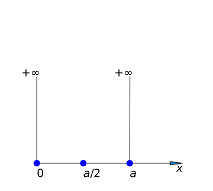
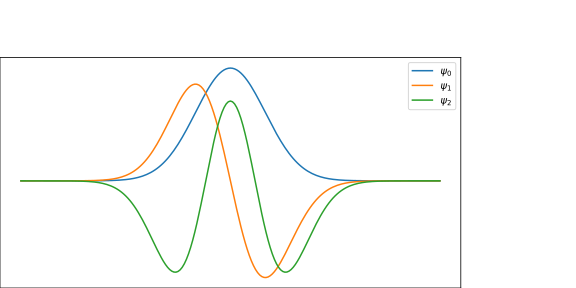

Table of Contents, with links to other slides of this same presentation.
统计诠释: 波函数的模方（$|\Psi|^2$）与找到粒子的概率成比例
"It is not possible to derive it from anything you know. It came out of the of Schr$\ddot{o}$dinger $\qquad$ -- R. P. Feynman "
\begin{equation*} i\hbar \frac{\partial }{\partial t} \Psi (\overrightarrow{r},t ) =\left [ -\frac{\hbar^2}{2\mu }\nabla ^2 + V(\overrightarrow{r},t ) \right ]\Psi (\overrightarrow{r}, t ) \end{equation*}
多粒子体系波函数： $$ \Psi (\vec{r_1},\vec{r_2},...,\vec{r_n},t ) $$
多粒子体系哈密顿: \begin{equation*} \hat{H} ~=\sum_{i=1}^{n}(-\frac{\hbar^2}{2\mu }\nabla ^2 _i + V(\vec{r_i},t)) + \sum_{i,j=1, i\ne j}^{n} U(\vec{r_i},\vec{r_j}) \end{equation*}
代回薛定谔方程，得
\begin{equation*} i\hbar \frac{\partial }{\partial t} \Psi (\vec{r_1},\vec{r_2},...,\vec{r_n},t ) =\left [ \sum_{i=1}^{n}(-\frac{\hbar^2}{2\mu }\nabla ^2 _i + V(\vec{r_i},t)) + \sum_{i,j=1, i\ne j}^{n} U(\vec{r_i},\vec{r_j}) \right ]\Psi (\vec{r_1},\vec{r_2},...,\vec{r_n},t ) \end{equation*}
为简单计，令 $ \mathrm{R}= (\vec{r_1},\vec{r_2},...,\vec{r_n}) $
方程可写成 \begin{equation*} i\hbar \frac{\partial }{\partial t} \Psi (\mathrm{R},t ) =\left [ \sum_{i=1}^{n}(-\frac{\hbar^2}{2\mu }\nabla ^2 _i + V(\vec{r_i},t)) + \sum_{i,j=1, i\ne j}^{n} U(\vec{r_i},\vec{r_j}) \right ]\Psi (\mathrm{R},t ) \end{equation*}
若势函数$V(\vec{r},t ) $不显含时间$t$，则可分离时间变量
令 $\Psi (\mathrm{R},t ) = \Psi (\mathrm{R} ) f(t) $ , 代回方程
$$i\hbar \Psi (\mathrm{R}) \frac{\partial }{\partial t} f(t)=f(t) \left [ \sum_{i=1}^{n}(-\frac{\hbar^2}{2\mu }\nabla ^2 _i + V(\vec{r_i})) + \sum_{i,j=1, i\ne j}^{n} U(\vec{r_i},\vec{r_j}) \right ]\Psi (\mathrm{R}) $$ $$ \displaystyle i\hbar \frac{1}{f(t)} \frac{\partial }{\partial t} f(t)= \frac{1}{\Psi (\mathrm{R}) } \left [ \sum_{i=1}^{n}(-\frac{\hbar^2}{2\mu }\nabla ^2 _i + V(\vec{r_i})) + \sum_{i,j=1, i\ne j}^{n} U(\vec{r_i},\vec{r_j}) \right ]\Psi (\mathrm{R}) $$
令上式恒等于$E$
I、演化（方程） \[ \displaystyle i\hbar \frac{1}{f(t)} \frac{\partial }{\partial t} f(t)=E \]
解得：$\displaystyle f(t) =e^{-iEt/\hbar}$
II、固有值问题 \[ \left [ \sum_{i=1}^{n}(-\frac{\hbar^2}{2\mu }\nabla ^2 _i + V(\vec{r_i})) + \sum_{i,j=1, i\ne j}^{n} U(\vec{r_i},\vec{r_j}) \right ]\Psi (\mathrm{R}) =E \Psi (\mathrm{R}) \]
方程-II，也称为定态薛定谔方程
现考虑无相互作用体系，定态薛定谔方程为：
\begin{aligned} \sum_{i=1}^{n}(-\frac{\hbar^2}{2\mu }\nabla ^2 _i + V(\vec{r_i})) \Psi (\mathrm{R}) &=E \Psi (\mathrm{R}) \\ \sum_{i=1}^{n}H_i \Psi (\mathrm{R}) &=\sum_{i=1}^{n} E_i \Psi (\mathrm{R}) \end{aligned}
若令: $\Psi (\mathrm{R})=\Psi (\vec{r_1},\vec{r_2},\cdots ,\vec{r_n})= \Psi _1 (\vec{r_1}) \Psi _2 (\vec{r_2})\cdots \Psi _n (\vec{r_n})$
方程化为： $$ \sum_{i=1}^{n}H_i \Psi _i (\vec{r_i}) =\sum_{i=1}^{n} E_i \Psi _i (\vec{r_i}) $$
去掉下标，方程变为： $$ H \Psi (\vec{r}) = E \Psi (\vec{r}) $$
这是单粒子体系的薛定谔方程
写成标准型 $$\left [ -\dfrac{\hbar^2}{2\mu }\nabla ^2 + V(x,y,z) \right ] \Psi (x,y,z) = E \Psi (x,y,z)$$
若势能函数可以写成 $$ V(x,y,z) = V_1 (x) + V_2 (y) + V_3 (z) $$
则有： \begin{aligned} H & = -\dfrac{\hbar^2}{2\mu }\nabla ^2 + V(x,y,z) \\ & = -\dfrac{\hbar^2}{2\mu } (\frac{\partial ^2}{\partial x^2 }+ \frac{\partial ^2}{\partial y^2 } + \frac{\partial ^2}{\partial z^2 })+ (V_1 (x) + V_2 (y) + V_3 (z)) \\ &= \sum_{i=1} ^3 (-\dfrac{\hbar^2}{2\mu } \frac{\partial ^2}{\partial x_i ^2} + V_i (x_i)) = H_x + H_y + H_z \end{aligned}
此时，若令 $$\Psi (x,y,z) = \Psi _1 (x) + \Psi _2 (y) + \Psi _3 (z) + $$
代回方程，得三个一维薛定谔方程 \begin{cases} \hat{H}(x)\Psi_1 (x)=E_x \Psi_1 (x) \\ \hat{H}(y)\Psi _2 (y)=E_y \Psi _2 (y) \\ \hat{H}(z)\Psi _3 (z)=E_z \Psi _3 (z) \end{cases}
同理，若势能函数可以写成 $$ V(x,y,z) = V(r,\theta,\varphi) = V_1 (r) + V_2 (\theta) + V_3 (\varphi) $$
则也可得三个一维薛定谔方程 \begin{cases} \hat{H}(r)\Psi_1 (x)=E_r \Psi_1 (r) \\ \hat{H}(\theta)\Psi _2 (\theta)=E_\theta \Psi _2 (\theta) \\ \hat{H}(\varphi)\Psi _3 (\varphi)=E_\varphi \Psi _3 (\varphi) \end{cases}
1. 求解自由粒子（势能函数 V(x,y,z) =0 ）定态薛定谔方程 $$\left [ -\dfrac{\hbar^2}{2\mu }\nabla ^2 + V(x,y,z) \right ] \Psi (x,y,z) = E \Psi (x,y,z)$$
2. 求解稳恒势场（V(x,y,z,t) =c） 中质量为$m$的粒子的薛定谔方程
作 业：
1. 求解处于如下势场中粒子的薛定谔方程 \begin{aligned} 1)\quad V(x,y,z,t) &= \sin x + \cos y + z \\ 2)\quad V(x,y,z,t) &= e^{x} + y^2 \\ \end{aligned}
2. 求解自由粒子（势能函数 V(x,y,z) =0 ） 的定态薛定谔方程 $$\left [ -\dfrac{\hbar^2}{2\mu }\nabla ^2 + V(x,y,z) \right ] \Psi (x,y,z) = E \Psi (x,y,z)$$
3. 如果势场（V）不显含位置变量，试分析薛定谔可否分离变量
例-1: 一粒子处于如下一维无限深方型势阱  $$V(x,t)=\begin{cases} 0, \qquad 0 < x < a \\ \\ +\infty, \qquad x < 0, x> a \end{cases}$$ 求解含时薛定谔方程
解: 势函数不显含时间t，含时薛定谔方程可分离变量，时间演化方程已求得（见前），现求一维定态薛定谔方程：
\begin{cases} \left [ -\dfrac{\hbar^2}{2\mu} \dfrac{\mathrm{d} ^2}{\mathrm{d} x^2} +0 \right ]\Psi(x) &= E\Psi(x), \qquad 0 < x < a \qquad (1) \\ \left [ -\dfrac{\hbar^2}{2\mu} \dfrac{\mathrm{d} ^2}{\mathrm{d} x^2} +\infty \right ]\Psi(x) &=E\Psi(x), \qquad x < 0, x> a \qquad(2) \\ \end{cases}
方程（2）的解为 $$\Psi(x) = 0, \qquad (x < 0, x> a) $$
解方程（1）：令 $ k^2= \dfrac{2\mu E}{\hbar ^2} $, 方程是如下边值问题
\begin{cases} \Psi ^{\prime\prime} (x) + k^2 \Psi(x)=0 \\ \\ \Psi(0)=0, \qquad \Psi(a)=0 \qquad \end{cases}
特征方程有两虚根，写出通解： \begin{equation*} \Psi(x) = A\cos(kx) +B\sin(kx) \end{equation*}
取$x=0$, 代入通解，得： $$ (A \cos(kx) +B\sin(kx))|_{x=0} =0 \quad \implies \quad A=0 $$
取$x=a$, 代入通解，得： $$ B\sin(ka)=0 $$
有：$ka=n\pi, \qquad (n=1,2,3,\cdots)$
结合 $ k^2= \dfrac{2\mu E}{\hbar ^2} $， 得:
把$A=0$和固有值$E_n$代入通解，得
根据波函数的统计诠释，全空间找到粒子的概率应为1:
\begin{aligned} 1&= \int\limits_{\infty}^{+\infty} |\Psi(x)|^2 dx \\ &= \int\limits_{0}^{a} \Psi_n ^*(x) \Psi_n(x)dx \\ &=\int \limits_{0}^{a} |B_n| ^2 \sin^2(\dfrac{n\pi}{a}x) dx \end{aligned}
归一化的固有函数： $ \Psi_n(x) = \sqrt{\dfrac{2}{a}} \sin(\dfrac{n\pi}{a}x)$
解函数： $$\Psi_n(x,t)= \begin{cases} \sqrt{\dfrac{2}{a}} \sin(\dfrac{n\pi}{a}x) e^{-\dfrac{i}{\hbar} E_n t}\qquad (0 < x < a) \\ \\ 0 \qquad \qquad \qquad \qquad (x < 0 , x> a) \end{cases}$$
如已知 $u(x,t)|_{t=0} = \sin(\dfrac{5\pi}{a}x) $, 求体系的波函数和能量值
例-2: 设有一粒子处于如下一维无限深势阱 $$V(x)=\left \{ \begin{array}{cccc} 0 ~~ ~~ |x| < \dfrac{a}{2} \\ +\infty ~~|x|> \dfrac{a}{2}\\ \end{array} \right.$$ 求解薛定谔方程
解: 势函数与上例存在平移关系
令$x' =x+a/2$, 有：
\begin{aligned} \sin(\dfrac{n\pi}{a}x') &=\sin(\dfrac{n\pi}{a} (x+a/2)) \\ &=\sin \dfrac{n\pi}{a} x \cos \dfrac{n\pi}{2} + \cos \dfrac{n\pi}{a} x \sin \dfrac{n\pi}{2} \end{aligned}
n为偶数： $E_{2m} = \dfrac{2m^2\pi^2\hbar^2}{\mu a^2} $
$\hspace{2cm}\Psi_{2m}(x)= B_{2m} \sin(\dfrac{2m\pi}{a}x) $
n为奇数： $E_{2m+1} = \dfrac{(2m+1)^2\pi^2\hbar^2}{2\mu a^2} $
$\hspace{2cm} \Psi_{2m+1}(x)= B_{2m+1} \cos(\dfrac{(2m+1)\pi}{a}x) $
求归一化系数 $\cdots$
直接求解 !$\cdots$
前三个波函数
解: 做势阱的平移与伸缩，得解：
TIPS: 注意总结基于坐标轴平移和伸缩直接写本征值值和本征函数的方法。
例-4: 求任意形态无限深势阱
例-5: 求解一维无限深势阱的非定常问题 \begin{cases} i\hbar \dfrac{\partial }{\partial t} \Psi (x,t) = -\dfrac{\hbar^2}{2\mu } \dfrac{\partial ^2 \Psi (x,t) }{\partial ^2 x ^2 } \qquad (0 < x < L, t> 0) \\ \Psi (0,t) = 0, \qquad \Psi (L,t) =0 \\ \Psi (x,0) = f(x) \end{cases}
解: 令$\Psi (x,t) =\Psi (x) T(t) $ , 代回方程，得时间演化方程（已解）和定态薛定谔方程
\begin{cases} \Psi''(x) + k^2 \Psi(x)=0 \\ \Psi(0)=0,\qquad \Psi(L)=0 \qquad \end{cases}
TIPS: 与例-1中的方程相类同。
固有值： $E_n = \dfrac{n^2\pi^2\hbar^2}{2\mu L^2} (n=1,2,3,...)$
固有函数： $ \Psi_n(x) = \sin(\dfrac{n\pi}{L}x) $
时间函数： $T_n(t) = \exp(-i E_n t /\hbar) $
叠加解：$ \Psi(x,t) = \sum\limits_{n=1}^{\infty} B_n \exp(-i E_n t /\hbar) \sin(\dfrac{n\pi}{L}x) $
$$ f(x)= \sum\limits_{n=1}^{\infty} B_n \sin(\dfrac{n\pi}{L}x) $$
傅里叶变换公式，得系数 $$B_n= \dfrac{2}{L} \int\limits_{0} ^{L} \sin(\dfrac{n\pi}{L}x) dx, ~~ (n=1,2,3,...) $$
作 业：
1、求定态薛定谔方程 \begin{cases} \Psi'' (x) +\dfrac{2\mu E}{\hbar ^2} \Psi(x) =0,~~ |x| < \frac{a}{2} \\ \Psi(-\frac{a}{2})=\Psi(\frac{a}{2})=0 \end{cases}
2、求解非定常问题 \begin{cases} i\hbar \dfrac{\partial }{\partial t} \Psi = -\dfrac{\hbar^2}{2\mu } \dfrac{\partial ^2 \Psi }{\partial ^2 x ^2 } , ~~ (0 < x < L, t>0) \\ \Psi (0,t) =0, ~~ \Psi (L,t) =0 \\ \Psi (x,0) =f(x) \\ \end{cases}
3、求三维无限势阱问题 $$V(x,y,z)=\left \{ \begin{array}{cccc} 0,\qquad 0 < x , y , z < a \\ +\infty , \qquad \qquad \text{others} \end{array} \right. $$
4. 基于坐标轴平移和伸缩法，写出由例-1求例-3本征值值和本征函数步骤
解: 在平衡位置 （$x=a$）附近可泰勒展开 \begin{equation*} V(x)=V(a) +\frac{1}{1!} \frac{\partial V}{\partial x} |_{x=a} (x-a) +\frac{1}{2!} \frac{\partial ^2 V}{\partial x ^2} |_{x=a} (x-a) ^2 + \cdots \end{equation*}
一阶导应为零，二阶近似可写为 $$\displaystyle \begin{array}{lllllllll} V(x) &\approx V(a)+\dfrac{1}{2!} \dfrac{\partial ^2 V}{\partial x ^2} |_{x=a} (x-a) ^2 \\ & =V_0+\dfrac{1}{2} k (x-a) ^2 \end{array}$$
取坐标原点为（$a, V_0 $）， 得： \begin{equation*} V(x)=\dfrac{1}{2} k x^2 \end{equation*}
弹簧力正是势函数V(x) 在平衡位置附近的二阶近似 \begin{equation*} F=-\frac{ \partial V}{\partial x}=-kx \end{equation*}
把势函数V(x) 改写成弹性势能： \begin{equation*} U(x)=\dfrac{1}{2} \mu \omega ^2 x^2 \end{equation*}
例-2: 把势函数代入薛定谔方程,得量子谐振子方程
\begin{equation*} i\hbar \frac{\partial }{\partial t} \Psi (x,t ) =[ -\frac{\hbar^2}{2\mu } \frac{d ^2}{x^2} + \frac{1}{2} \mu \omega ^2 x^2 ] \Psi (x, t ) \end{equation*}
解: 令$\Psi (x,t) =\Psi(x) T(t) $ , 代回方程
时间和位置分离变量：
解得时间函数： $$T(t) = \exp(-i E t /\hbar) $$
位置函数满足定态薛定谔方程 \begin{equation*} \left [ -\frac{\hbar^2}{2\mu} \frac{\mathrm{d} ^2}{\mathrm{d} x^2} +\frac{1}{2}\mu \omega^2 x^2 \right ]\Psi(x)=E\Psi(x) \end{equation*}
整理 \begin{equation*} \frac{1}{\dfrac{\mu\omega}{\hbar}} \frac{\mathrm{d} ^2\Psi}{\mathrm{d} x^2} + \left ( \frac{2E}{\omega \hbar} -\frac{\mu \omega}{\hbar} x^2 \right )\Psi=0 \end{equation*}
令：$ \xi =\alpha x$，做伸缩变换 \begin{equation*} \frac{\mathrm{d} \Psi}{\mathrm{d} x} =\frac{\mathrm{d} \Psi}{\mathrm{d} \xi} \frac{\mathrm{d} \xi}{\mathrm{d} x} = \alpha \frac{\mathrm{d} \Psi}{\mathrm{d} \xi} \end{equation*}
\begin{equation*} \frac{\mathrm{d} \Psi ^2 }{\mathrm{d} x ^2} =\frac{\mathrm{d}}{\mathrm{d} x} ( \alpha \frac{\mathrm{d} \Psi}{\mathrm{d} \xi} ) = \alpha ^2 \frac{\mathrm{d} ^2 \Psi}{\mathrm{d} \xi ^2} \end{equation*}
代回方程， 得 \begin{equation*} \left[ \frac{\hbar ^2 \alpha ^2 }{2\mu} \frac{\mathrm{d}}{\mathrm{d} \xi ^2} + (E- \frac{\mu \omega ^2 \xi ^2}{2 \alpha ^2} ) \right] \Psi(\xi) =0 \end{equation*}
同除二阶导数项系数， 得 \begin{equation*} \left[ \frac{\mathrm{d}}{\mathrm{d} \xi ^2} + \frac{2\mu}{\hbar ^2 \alpha ^2 } (E- \frac{\mu \omega ^2 \xi ^2}{2 \alpha ^2} ) \right] \Psi(\xi) =0 \end{equation*}
令 $\dfrac{\mu ^2 \omega ^2 }{\hbar ^2 \alpha ^ 4}=1 $，得伸缩系数： \begin{equation*} \alpha ^2= \frac{\mu\omega}{\hbar} \end{equation*}
引入特征值 \begin{equation*} \lambda = \frac{2E}{\omega \hbar} \end{equation*}
得二阶变系数常微分方程 \begin{equation*} \left[ \frac{\mathrm{d} ^2\Psi}{\mathrm{d} \xi^2} + \left( \lambda - \xi^2 \right) \right] \Psi=0 \end{equation*}
(1)考虑渐近行为， 当 $ |x| \to \infty, \xi \to \infty$，有 $ \xi ^2 \gg \lambda $，方程可近似为
\begin{equation*} \left(\frac{\mathrm{d} ^2}{\mathrm{d} \xi^2} - \xi^2 \right) \Psi=0 \end{equation*}
方程并无表达式解，但通过检验平方指数函数的导数 \begin{equation*} \frac{d^2 }{d \xi ^2} \exp(\frac{\xi ^2}{2}) =(\xi ^2 +1) \exp(\frac{\xi ^2}{2}) \end{equation*}
\begin{equation*} \frac{d^2 }{d \xi ^2} \exp( - \frac{\xi ^2}{2}) =(\xi ^2 -1) \exp( - \frac{\xi ^2}{2}) \end{equation*}
当 $ \xi \to \infty$， 这两导数可近似为： \begin{equation*} (\xi ^2 ) \exp( \frac{\xi ^2}{2}) ~~, ~~ (\xi ^2 ) \exp( - \frac{\xi ^2}{2}) \end{equation*}
因此，极限状态解应与如下函数相关联 \begin{equation*} C_1 \exp( \frac{\xi ^2}{2}) + C_2 \exp( - \frac{\xi ^2}{2}) \end{equation*}
考虑到波函数的有界性，应删除发散项（第一项），得极限状态波函数的简洁形式 \begin{equation*} \Psi_\infty (\xi) \sim C_2 \exp( - \frac{\xi ^2}{2}) \end{equation*}
(2) 非极限状态，作常数变异，解函数可写成： \begin{equation*} \Psi(\xi) = H(\xi) e^{-\xi^2/2 } \end{equation*} 问题等价为求级数 H ！
求导： \begin{equation*} \Psi'(\xi) = H'(\xi) e^{-\xi^2/2 } - H(\xi) \xi e^{-\xi^2/2 } \end{equation*}
\begin{equation*} \Psi''(\xi) = \left[ \left( \xi^2 -1 \right) H -2\xi H' +H'' \right] e^{-\xi^2/2} \end{equation*}
代回原方程 $$ \dfrac{\mathrm{d} ^2\Psi}{\mathrm{d} \xi^2} + \left( \lambda - \xi^2 \right) \Psi=0 $$
得关于$H(\xi)$的方程： \begin{equation*} H'' -2 \xi H' +(\lambda -1) H=0 \end{equation*}
取$\lambda -1= 2n $，方程转化为n阶厄密方程 \begin{equation*} H'' -2 \xi H' +2n H=0 \end{equation*}
由 $\lambda -1= 2n, \lambda = \dfrac{2E}{\hbar \omega}$
解出能量固有值(能级) \begin{equation*} E_n=\left(n+\frac{1}{2}\right) \hbar \omega, \qquad ( n=0,1,2, \cdots ) \end{equation*}
例-3: 试通过求解n阶厄密方程，得量子谐振子的固有函数（能量本征态） \begin{equation*} H'' -2 \xi H' +2n H=0 \end{equation*}
解: 做幂级数展开： \begin{equation*} H=\sum_{k=0}^{\infty} c_k \xi ^k \end{equation*}
求一阶导和二阶导，并代回厄密方程 $\cdots$
得系数递推式-1： \begin{equation*} c_{k+2} = \frac{ 2(k-n)}{(k+2)(k+1) } c_k, ~~ \left( k=0,1,2,3, \cdots \right) \end{equation*}
偶数阶： \begin{equation*} c_{2m} = (-1) ^m \frac{2^mn(n-2)(n-4) ... (n-2m+2) } {(2m)!} c_0 \end{equation*}
当 $2m>n$时，有 $ c_{2m} =0$ \begin{equation*} c_{k} = (-1) ^m \frac{2^mn !! } {k!} c_0, ~~~(2m=k) \end{equation*}
奇数阶： \begin{equation*} c_{2m+1} = (-1) ^m \frac{2^m (n-1) (n-3)(n-5)...(n-2m+1) } {(2m+1)!} c_1 \end{equation*}
当$2m+1>n$时，有 $ c_{2m+1} =0$ \begin{equation*} c_{k} = (-1) ^m \frac{2^m n!! }{k!} c_1, ~~~ (2m+1=k) \end{equation*}
两者结合，幂级数得解 $$\begin{cases} y_1(\xi) = [1- \dfrac{2n}{2!} \xi^2+ \dfrac{2^2n(n-2)}{4!} \xi^4 -... ] \\ \\ y_2(\xi) = [\xi- \dfrac{2(n-1)}{3!} \xi^3+ \dfrac{2^2(n-1)(n-3) }{5!}\xi^5 -... ] \end{cases}$$
n阶厄密方程的解： \begin{equation*} H(\xi) =c_0y_1(\xi)+c_1 y_2(\xi). \end{equation*}
量子谐振子的固有函数： \begin{equation*} \Psi(\xi) = H(\xi)e^{-\xi^2/2 } \end{equation*}
根据波函数的有界性性质，$H(\xi)$应是多项式, 称为厄密多项式。
分析系数递推式： \begin{equation*} c_{k+2} = \frac{ 2(k-n)}{(k+2)(k+1) } c_k, ~~ \left( k=0,1,2,3, \cdots \right) \end{equation*}
当 $k=n$时，$c_{k+2}=0, c_{k+4}=0, \cdots $
即: $n$ 阶厄密方程的解-厄密多项式的最高阶正好为$n$
解: 系数递推式-1： \begin{equation*} c_{k+2} = \frac{ 2(k-n)}{(k+2)(k+1) } c_k, ~~ \left( k=0,1,2,3, \cdots \right) \end{equation*}
反过来写 \begin{equation*} c_{k-2} = -\frac{k(k-1) } { 2(n-k+2)} c_k \end{equation*}
厄密多项式最高阶为$n$，令系数 $c_n = 2^n $, 则 $k=n$, 代入上式： \begin{equation*} c_{n-2} = -\frac{n(n-1) } { 2\times 2} c_n \end{equation*}
令 $k=n-2$, 代入上式： \begin{aligned} c_{n-4} &= -\frac{(n-2)(n-3) } { 2\times 4} c_{n-2} \\ &= (-1)^2 \frac{n(n-1)(n-2) (n-3) } { (2\times 2) \times (2\times 4) } 2^n \end{aligned}
令 $k=n-4$, 代入上式： \begin{aligned} c_{n-6} &= -\frac{(n-4)(n-5) } { 2\times 6} c_{n-2} \\ &= (-1)^2 \frac{n(n-1)(n-2) (n-3)(n-4)(n-5) } { (2\times 2) \times (2\times 4)\times(2\times 6) } 2^n \end{aligned}
得系数递推式-2 \begin{aligned} c_{n-2m} &= (-1)^m \frac{n! } { 2^m (2m) !! (n-2m)!} 2^n \\ &= (-1)^m \frac{n! } { m ! (n-2m)!} 2^{n-2m} \end{aligned}
上式无论 n 是奇数还是偶数都成立，若令$M=[\frac{n}{2}]$, 得厄米多项式表达式： \begin{equation*} H_n(\xi) =\sum_{m=0}^{M} (-1)^m \frac{n! } { m ! (n-2m)!} 2^{n-2m} \xi^{n-2m} , \qquad M=[n/2] \end{equation*}
量子谐振子的本征函数 \begin{equation*} \Psi_n(\xi) = N_n \exp(-\frac{\xi ^2}{2}) H_n(\xi) \end{equation*}
归一化本征函数：（...） \begin{equation*} \Psi_n(x) = \left( \frac{\alpha}{\sqrt{\pi} 2^n n!} \right) ^{1/2} \exp(-\frac{ \alpha^2 x^2}{2}) H_n( \alpha x) \end{equation*}
定态波函数为 \begin{equation*} \Psi_n(x,t) = \left( \frac{\alpha}{\sqrt{\pi} 2^n n!} \right) ^{1/2} \exp(-\frac{ \alpha^2 x^2}{2} -\frac{i}{\hbar} E_n t ) H_n( \alpha x) \end{equation*}
叠加解： $$u(x,t)=\sum_n a_n \Psi_n(x,t) $$
由初始条件，确定系数 $a_n, \cdots $
结束！
量子谐振子的前三个本征函数 
作 业：
1、计算积分 $$\begin{array}{lllllllll} &\int\limits_{0}^{+\infty} e^{-x^2 /2} dx \end{array}$$
2、 根据厄米多项式表达式，写出前五个厄米多项式，并分析$H'_n (x)$ 与$H_{n-1} (x)$ 之间的联系
3、 求解厄米方程 $$\begin{array}{lllllllll} & \dfrac{d^2 H}{d x^2} -2x \dfrac{d y}{d x} +4n H =0 \end{array}$$
例-1: 试证明下列函数是厄密多项式的生成函数 \begin{equation*} w(x,t)=e^{2xt-t^2} \end{equation*}
分析: 所谓生成函数，即它的某种展开系数恬好就是Hermite 多项式
把函数做关于变量t的Taylor 展开： \begin{equation*} w(x,t) =\sum_{n=0}^{\infty} \frac{1}{n!} c_n(x) t^n \end{equation*}
需证明： \begin{equation*} \left[ \frac{d^2}{dx^2} -2x\frac{d}{dx} +2n \right] c_n(x)=0 \end{equation*}
证明： 对位置求导 $$ \dfrac{\partial w}{\partial x} =2t e^{2xt-t^2} =2t ~w(x,t) $$
把展开式代入上式 \begin{aligned} \sum\limits_{n=0}^{\infty} \dfrac{1}{n!} c~'_n(x) t^n = 2t \sum\limits_{n=0}^{\infty} \dfrac{1}{n!} c_n(x) t^n \end{aligned}
\begin{aligned} \sum\limits_{n=0}^{\infty} \dfrac{1}{n!} c~'_n(x) t^n &= \sum\limits_{n=0}^{\infty} \dfrac{1}{n!} 2c_{n}(x) t^{n+1}\\ &= \sum\limits_{n=1}^{\infty} \dfrac{1}{n!} 2nc_{n-1}(x) t^{n} \end{aligned}
两多项式相等，必对应系数相等 $$c'_n(x)=2nc_{n-1}(x) \quad (1) $$
再求导： $$ c''_n(x)=2nc~'_{n-1}(x)=4n(n-1)c_{n-2}(x) \quad (2)$$
把展开式代入上式 \begin{aligned} \sum\limits_{n=1}^{\infty} \dfrac{1}{n!}n c_n(x) t^{n-1} +\sum\limits_{n=0}^{\infty} \dfrac{1}{n!}2(t-x) c_n(x)t^n&=0\\ \sum\limits_{n=1}^{\infty} \dfrac{1}{n!}n c_n(x) t^{n-1} +\sum\limits_{n=0}^{\infty} \dfrac{-2x}{n!} c_n(x)t^n +\sum\limits_{n=0}^{\infty}\dfrac{2}{n!} c_n(x)t^{n+1}&=0 \end{aligned}
$$\sum\limits_{n=0}^{\infty} \dfrac{1}{n!} c_{n+1}(x) t^{n} +\sum\limits_{n=0}^{\infty} \dfrac{-2x}{n!} c_n(x)t^n +\sum\limits_{n=1}^{\infty}\dfrac{2n}{n!} c_{n-1}(x)t^n =0$$
系数有关系式 $$c_{n+1}(x) -2xc_n(x) +2nc_{n-1} (x) =0 \quad (3) $$
降阶，有： $$c_{n}(x) -2xc_{n-1}(x) +2(n-1)c_{n-2} (x) =0 \quad (4) $$
把（1）（2）式代入 (4) \begin{aligned} &c_{n}(x) -2xc_{n-1}(x) +2(n-1)c_{n-2} (x) =0 \quad (4) \\ & c_{n}(x) - \dfrac{x}{n}c~'_{n}(x) +\dfrac{1}{2n}c~''_{n} (x) =0 \\ &\left[ \dfrac{d^2}{dx^2} -2x\frac{d}{dx} +2n \right] c_n(x)=0 \end{aligned}
即有： $c_n(x)=H_n(x) $
证毕！
例-2: 试证明厄密方程多项式存在如下递推式 \begin{aligned} &H_0(x)=1, H_1(x)=2x \qquad (a)\\ &H_{n}(x) -2xH_{n-1}(x) +2(n-1)H_{n-2} (x) =0 \qquad (b) \\ &H'_n(x)=2nH_{n-1}(x) \qquad (c) \end{aligned}
证明： 既然： $c_n(x)=H_n(x) $,
由生成函数的Taylor 展开式，直接得证 （a）。
由生成函数一节的（4）式， 直接得证 （b）
由生成函数一节的（1）式， 直接得证 （c）
例-3: 试证明厄密方程多项式具有如下微分形式 $$ H_n(x) =(-1) ^n e^{x^2} \frac{d~^n }{d~x^n} e^{-x^2} $$
证明： 生成函数的Taylor 展开 \begin{aligned} w(x,t) &=\sum_{n=0}^{\infty} \frac{1}{n!} c_n(x) t^n \\ &=\sum_{n=0}^{\infty} \frac{1}{n!} H_n(x) t^n \end{aligned}
Taylor 展开系数公式 \begin{aligned} H_n(x) &= \left[ \frac{\partial ~^n w }{\partial t^n} \right] _{t=0} \\ &=e^{x^2} \left[ \frac{\partial ^n }{\partial t^n} e^{-(x-t)^2} \right] _{t=0} \\ &=(-1) ^n e^{x^2} \left[ \frac{d~^n }{d~u^n} e^{-u^2} \right] _{u=x} \\ &= (-1) ^n e^{x^2} \frac{d~^n }{d~x^n} e^{-x^2} \end{aligned}
证毕！
例-4: 试证明厄密多项式带权正交归一性 \begin{cases} \int\limits_{-\infty}^{+\infty} e^{-\xi^{2}} H_m(\xi) H_n(\xi)d\xi &=0 \\ \int\limits_{-\infty}^{+\infty} e^{-\xi^{2}} H_n(\xi) H_n(\xi)d\xi &=2^n n! \sqrt{\pi} \end{cases}
证明： (1) 正交性： 把$\lambda=2n+1 $代入谐振子方程 $$ \dfrac{\mathrm{d} ^2\Psi}{\mathrm{d} \xi^2} + \left( \lambda - \xi^2 \right) \Psi=0 $$
得方程： $\Psi''_n +(2n+1-\xi^2) \Psi_n =0$
$u_n(x)=H_n(\xi) e^{-\xi^{2}/2}$ 是方程的解
必有： $$ u''_n +(2n+1-\xi^2) u_n =0 \qquad (1)$$ $$ u''_m +(2m+1-\xi^2) u_m =0 \qquad (2)$$
(1)乘 $u_m$, (2)乘 $u_n$, 得 $$ u_mu''_n +(2n+1-\xi^2) u_mu_n =0 \qquad (3)$$ $$ u_nu''_m +(2m+1-\xi^2) u_nu_m =0 \qquad (4)$$
(3)-(4), 并整理 $$ -2(n-m)u_nu_m = u_mu''_n -u_nu''_m $$
两端全空间积分 \begin{aligned} -2(n-m)\int\limits_{-\infty}^{+\infty}&u_nu_m d\xi = \int\limits_{-\infty}^{+\infty} [u_mu''_n -u_nu''_m] d\xi \\ &= [u_mu''_n -u_nu''_m] \left |_{-\infty} ^{+\infty} \right. -\int\limits_{-\infty}^{+\infty} [u'_mu'_n -u'_nu'_m] d\xi \\ &= 0 \end{aligned}
\begin{aligned} \int\limits_{-\infty}^{+\infty}u_nu_m d\xi & =0 \\ \int\limits_{-\infty}^{+\infty} e^{-\xi^{2}} H_m(\xi) H_n(\xi)d\xi &=0 \end{aligned}
即： 厄密多项式带权正交。
（2）归一性： 递推公式 $$ H_{n} -2xH_{n-1} +2(n-1)H_{n-2} =0 $$
乘$H_{n}$ $$H^2_{n}-2xH_n H_{n-1}+2(n-1) H_n H_{n-2} =0 $$
递推公式 $$ H_{n+1} -2xH_{n} +2nH_{n-1} =0 $$
乘$H_{n-1}$ $$H_{n+1} H_{n-1}-2xH_{n} H_{n-1}+2nH^2_{n-1} =0 $$
两次相减 $$H^2 _n(\xi) -H_{n+1} H_{n-1}=2n H^2 _{n-1}(\xi) - 2(n-1) H_n H_{n-2}$$
乘以权重函数再积分, 得积分递推式： $$\int\limits_{-\infty}^{+\infty} e^{-\xi^2} H^2 _n(\xi) d\xi =2n \int\limits_{-\infty}^{+\infty} e^{-\xi^{2}} H^2 _{n-1}(\xi) d\xi $$
$$= 2n \times 2(n-1) \int\limits_{-\infty}^{+\infty} e^{-\xi^{2}} H^2 _{n-2}(\xi) d\xi$$
\begin{aligned} &= 2n \times 2(n-1) ... (2(n-n)) \int\limits_{-\infty}^{+\infty} e^{-\xi^{2}} H^2 _{0}(\xi) d\xi \\ &= 2^n n! \int\limits_{-\infty}^{+\infty} e^{-\xi^{2}} H^2 _{0}(\xi) d\xi \\ &= 2^n n! \int\limits_{-\infty}^{+\infty} e^{-\xi^{2}} d\xi \\ &= 2^n n! \sqrt{\pi} \end{aligned}
证毕！
例-3: 固有解如下，求归一化系数 $N_n$ $$ \Psi_n(\xi) = N_n \exp(-\frac{\xi ^2}{2}) H(\xi)$$
解: 把波函数代入归一化公式 \begin{aligned} 1 &= \int\limits_{-\infty}^{+\infty} \Psi_n ^* (\xi)\Psi_n(\xi) d\xi \\ &= \int\limits_{-\infty}^{+\infty} [N_n \exp(-\frac{\xi ^2}{2}) H(\xi) ]^2 d\xi \end{aligned}
$$1=N^2 _n 2^n n! \sqrt{\pi}$$
$$\implies N_n=\dfrac{1}{(2^n n! \sqrt{\pi}) ^{1/2}}$$
注意: 这是 $H(\xi)$的归一化
考虑到$\xi = \alpha x, \Psi_n(x)$ 的归一化系数要做相应的变换, 因此，
$$N_n=\left( \dfrac{\alpha}{\sqrt{\pi} 2^n n! } \right) ^{1/2} $$
归一化固有函数： $$\Psi_n(x) = \left( \dfrac{\alpha}{\sqrt{\pi} 2^n n! } \right) ^{1/2} e^{-a^2 x^2} H_n(\alpha x)$$
定态波函数： \begin{aligned} \Psi_n(x,t) &= \Psi_n(x) e^{-\dfrac{i}{\hbar} E_n t } \\ &= \left( \dfrac{\alpha }{\sqrt{\pi} 2^n n! } \right) ^{1/2} e^{-a^2 x^2 -\dfrac{i}{\hbar} E_n t } H_n(\alpha x) \end{aligned}
课堂测试:
求处于如下势场： \begin{equation*} V(x)= \frac{1}{2} \mu \omega ^2 x^2 +\mu \end{equation*} 中粒子的能量固有值和定态波函数
作 业： 1、将函数$f(x)=x^3+2x^2 +1$ 按厄米多项式展开
参考答案：$f(x) =\dfrac{1}{8} H_3 + \dfrac{1}{2} H_2 +\dfrac{3}{4} H_1 + 2 H_0 $
2、写出厄米多项式的递推公式，并求 $H_n(0) , H'_n(0) , H_n(1) , H'_n(1) $
3、求解初值问题 \begin{equation*} \left\{ \begin{aligned} & i \hbar \dfrac{\partial \Psi}{\partial t} = \left[ -\dfrac{\hbar ^2}{2\mu} \dfrac{\partial ^2}{\partial x^2} +\dfrac{1}{2} \mu \omega ^2 x ^2 \right] \Psi \\ & \Psi(x, 0) =\psi(x) \end{aligned} \right. \end{equation*}
4、电荷为q的谐振子，受到沿 x 方向的外电场$\xi $的作用时，势场如下，求能量固有值和定态波函数 \begin{equation*} V(x)= \frac{1}{2} \mu \omega ^2 x^2 +q\xi x \end{equation*}